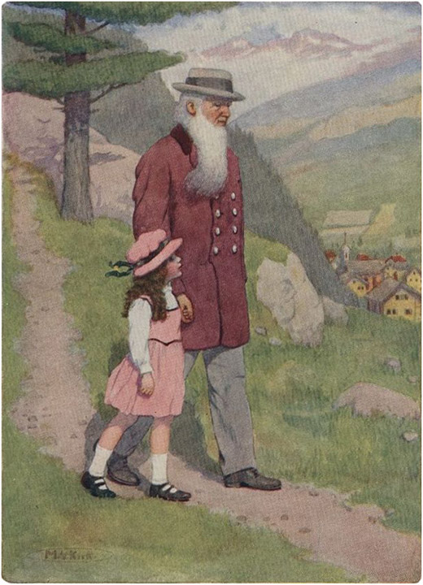

Heidi berdiri di bawah pohon cemara yang bergoyang, menunggu kakeknya bergabung dengannya. Kakeknya telah berjanji untuk membawakan koper Heidi dari desa sementara Heidi pergi mengunjungi neneknya. Anak itu sangat ingin bertemu kembali dengan wanita buta itu dan mendengar bagaimana neneknya menyukai roti gulung yang dibuatnya. Saat itu hari Sabtu, dan kakeknya sedang membersihkan pondok. Tak lama kemudian ia siap berangkat. Ketika mereka turun dan Heidi memasuki gubuk Peter, neneknya memanggilnya dengan penuh kasih sayang: "Kau datang lagi, Nak?"
Ia menggenggam tangan Heidi dan memegangnya erat-erat. Kemudian nenek memberi tahu pengunjung kecil itu betapa enaknya roti-roti itu, dan betapa lebih kuatnya perasaannya sekarang. Brigida melanjutkan bahwa nenek hanya makan satu roti saja, karena takut menghabiskannya terlalu cepat. Heidi mendengarkan dengan penuh perhatian, dan berkata: "Nenek, aku tahu apa yang akan kulakukan. Aku akan menulis surat kepada Clara dan dia pasti akan mengirimiku lebih banyak lagi."
Namun Brigida berkomentar: "Niatnya baik, tetapi roti itu cepat sekali mengeras. Seandainya aku punya sedikit uang tambahan, aku bisa membelinya dari tukang roti kami. Dia juga membuat roti, tetapi aku hampir tidak mampu membayar roti hitam itu."
Wajah Heidi tiba-tiba berseri-seri. "Oh, nenek, aku punya banyak sekali uang," serunya. "Sekarang aku tahu apa yang akan kulakukan dengannya. Setiap hari nenek harus punya satu roti segar dan dua pada hari Minggu. Peter bisa membawanya dari desa."
"Tidak, tidak, Nak," pinta nenek itu. "Itu tidak boleh terjadi. Kamu harus memberikannya kepada kakek dan dia akan memberitahumu apa yang harus dilakukan dengannya."
Namun Heidi tidak mendengarkan, melainkan melompat-lompat riang di sekitar ruangan kecil itu, berteriak berulang-ulang: "Sekarang nenek bisa makan roti setiap hari. Dia akan sembuh dan kuat, dan," serunya dengan gembira, "mungkin matamu juga akan melihat lagi, ketika kamu sudah kuat dan sehat."
Sang nenek tetap diam, agar tidak merusak kebahagiaan anak itu. Melihat buku himne lama di rak, Heidi berkata:
"Nenek, bolehkah aku membacakan sebuah lagu dari bukumu sekarang? Aku bisa membaca dengan cukup baik!" tambahnya setelah jeda.
"Oh ya, aku harap kau bisa, Nak. Apakah kau benar-benar bisa membaca?"
Heidi, sambil menaiki kursi, mengambil buku berdebu dari rak. Setelah dengan hati-hati membersihkannya, dia duduk di atas bangku kecil.
"Nenek, aku harus membaca apa?"
"Terserah kamu," jawab neneknya. Sambil membalik halaman, Heidi menemukan sebuah lagu tentang matahari, dan memutuskan untuk membacanya dengan lantang. Ia membaca semakin antusias, sementara neneknya, dengan tangan terlipat, duduk di kursinya. Ekspresi kebahagiaan yang tak terlukiskan terpancar di wajahnya, meskipun air mata mengalir di pipinya. Ketika Heidi telah mengulangi bagian akhir lagu beberapa kali, wanita tua itu berseru: "Oh, Heidi, semuanya tampak cerah lagi bagiku dan hatiku terasa ringan. Terima kasih, Nak, kamu telah berbuat banyak kebaikan padaku."
Heidi terpukau melihat wajah neneknya, yang telah berubah dari ekspresi tua dan sedih menjadi ekspresi gembira.
Ia tampak mendongak dengan penuh rasa syukur, seolah-olah ia sudah dapat melihat taman-taman surgawi yang indah seperti yang diceritakan dalam himne tersebut.
Tak lama kemudian kakek mengetuk jendela, karena sudah waktunya pergi. Heidi segera menyusul, meyakinkan nenek bahwa ia akan mengunjunginya setiap hari mulai sekarang; pada hari-hari ia pergi ke padang rumput bersama Peter, ia akan kembali pada sore hari, karena ia tidak ingin melewatkan kesempatan untuk membuat hati nenek gembira dan ringan. Brigida mendesak Heidi untuk membawa gaunnya, dan dengan gaun itu di lengannya, anak itu bergabung dengan lelaki tua itu dan segera menceritakan apa yang telah terjadi.
Setelah mendengar rencananya untuk membeli roti untuk nenek setiap hari, kakek dengan berat hati menyetujuinya.
Mendengar itu, anak itu melompat kegirangan sambil berteriak: "Oh kakek, sekarang nenek tidak perlu lagi makan roti hitam yang keras. Oh, semuanya begitu indah sekarang! Jika Tuhan Bapa kita segera melakukan apa yang aku doakan, aku pasti sudah pulang dan tidak akan bisa membawa separuh roti untuk nenek. Aku juga tidak akan bisa membaca. Nenek bilang bahwa Tuhan akan membuat semuanya jauh lebih baik daripada yang pernah aku impikan. Mulai sekarang aku akan selalu berdoa, seperti yang nenek ajarkan. Ketika Tuhan tidak mengabulkan apa yang aku doakan, aku akan selalu ingat bagaimana semuanya berjalan dengan baik kali ini. Kita akan berdoa setiap hari, kakek, ya, karena kalau tidak Tuhan mungkin akan melupakan kita."
"Dan bagaimana jika seseorang lupa melakukannya?" gumam lelaki tua itu.
"Oh, dia akan mengalami nasib buruk, karena Tuhan pun akan melupakannya. Jika dia tidak bahagia dan sengsara, orang-orang tidak mengasihaninya, karena mereka akan berkata: 'dia telah menjauh dari Tuhan, dan sekarang Tuhan, yang satu-satunya dapat menolongnya, tidak mengasihaninya'."
"Benarkah begitu, Heidi? Siapa yang memberitahumu?"
"Nenek menjelaskan semuanya padaku."
Setelah terdiam sejenak, kakek itu berkata: "Ya, tetapi jika itu sudah terjadi, maka tidak ada pertolongan; tidak seorang pun dapat kembali kepada Tuhan, ketika Tuhan telah melupakannya."
"Tapi kakek, setiap orang bisa kembali kepada-Nya; nenek pernah bilang begitu, dan lagipula ada kisah indah di bukuku. Oh, kakek, kau belum tahu, dan aku akan membacakannya untukmu begitu kita sampai di rumah."
Kakek membawa keranjang besar, tempat ia membawa setengah isi koper Heidi; koper itu terlalu besar untuk dibawa mendaki tanjakan yang curam. Sesampainya di gubuk dan meletakkan barang bawaannya, ia harus duduk di samping Heidi, yang siap memulai cerita. Dengan penuh semangat, Heidi membacakan kisah anak yang hilang, yang bahagia di rumah bersama sapi dan domba ayahnya. Gambarnya menunjukkan dia bersandar pada tongkatnya, menyaksikan matahari terbenam. "Tiba-tiba ia ingin memiliki warisan sendiri, dan bisa menjadi tuan atas dirinya sendiri. Menuntut uang dari ayahnya, ia pergi dan menghamburkan semuanya. Ketika ia tidak memiliki apa pun lagi di dunia ini, ia harus bekerja sebagai pelayan kepada seorang petani, yang tidak memiliki ternak yang bagus seperti ayahnya, tetapi hanya babi; pakaiannya compang-camping, dan untuk makanan ia hanya mendapatkan sekam yang menjadi makanan babi. Seringkali ia berpikir betapa baiknya rumah yang telah ditinggalkannya, dan ketika ia mengingat betapa baiknya ayahnya kepadanya dan ketidakbersyukurannya sendiri, ia menangis karena penyesalan dan kerinduan. Kemudian ia berkata pada dirinya sendiri: 'Aku akan pergi kepada ayahku dan meminta maaf kepadanya.' Ketika ia mendekati rumah lamanya, ayahnya keluar untuk menemuinya—"
"Menurutmu apa yang akan terjadi sekarang?" tanya Heidi. "Kamu pikir ayahnya marah dan akan berkata: 'Bukankah sudah kukatakan?' Tapi dengarkan saja: 'Dan ayahnya melihatnya dan merasa kasihan, lalu berlari dan memeluknya. Dan anak itu berkata: Ayah, aku telah berdosa terhadap Surga dan di hadapan-Mu, dan aku tidak layak lagi disebut anak-Mu. Tetapi ayahnya berkata kepada para pelayannya: Bawalah jubah terbaik dan pakaikanlah kepadanya; dan kenakanlah cincin di tangannya dan sepatu di kakinya; dan bawalah anak lembu gemuk ke sini dan sembelihlah; dan marilah kita makan dan bersukaria: Karena anakku ini telah mati dan hidup kembali; ia telah hilang dan ditemukan kembali.' Dan mereka mulai bersukaria."
"Bukankah ini cerita yang indah, kakek?" tanya Heidi, ketika kakek duduk diam di sampingnya.
"Ya, Heidi, benar," kata kakeknya, tetapi dengan nada serius sehingga Heidi diam-diam melihat foto-foto itu. "Lihat betapa bahagianya dia," katanya sambil menunjuk ke foto itu.
Beberapa jam kemudian, ketika Heidi tertidur lelap, lelaki tua itu menaiki tangga. Meletakkan lampu kecil di samping anak yang sedang tidur itu, ia mengamatinya lama sekali . Tangan kecilnya terlipat dan wajahnya yang kemerahan tampak percaya diri dan damai. Lelaki tua itu kini melipat tangannya dan berkata dengan suara rendah, sementara air mata besar mengalir di pipinya: "Ayah, aku telah berdosa terhadap Surga dan Engkau, dan aku tidak lagi layak menjadi putra-Mu!"
Pagi berikutnya, sang paman berdiri di depan pintu, memandang sekeliling lembah dan gunung. Beberapa lonceng pagi berbunyi dari bawah dan burung-burung bernyanyi lagu pagi mereka.
Setelah kembali masuk rumah, dia memanggil: "Heidi, bangun! Matahari bersinar! Pakai gaun yang cantik, karena kita akan pergi ke gereja!"
Itu panggilan baru, dan Heidi segera menurut. Ketika anak itu turun ke bawah dengan gaun kecilnya yang cantik, dia membuka matanya lebar-lebar. "Oh, kakek!" serunya, "Aku belum pernah melihatmu mengenakan jas Minggu dengan kancing perakmu. Oh, betapa tampannya kau!"
Pria tua itu, menoleh ke anak kecil itu, berkata sambil tersenyum: "Kamu juga terlihat cantik; ayo !" Dengan tangan Heidi di tangannya, mereka berjalan bersama. Semakin dekat mereka ke desa, semakin keras dan merdu suara lonceng bergema. "Oh kakek, apakah kau mendengarnya? Sepertinya ini pesta besar dan meriah," kata Heidi.
Ketika mereka memasuki gereja, semua orang sedang bernyanyi. Meskipun mereka duduk di bangku paling belakang, orang-orang telah menyadari kehadiran mereka dan membicarakannya dengan berbisik. Ketika pendeta mulai berkhotbah, kata-katanya merupakan ucapan syukur yang lantang yang menyentuh hati semua pendengarnya. Setelah kebaktian, lelaki tua dan anak itu berjalan ke rumah pendeta. Pendeta telah membuka pintu dan menerima mereka dengan ramah. "Saya datang untuk meminta maaf atas kata-kata kasar saya," kata paman itu. "Saya ingin mengikuti saran Anda untuk menghabiskan musim dingin di sini di antara Anda. Jika orang-orang memandang saya dengan curiga, saya tidak bisa mengharapkan yang lebih baik. Saya yakin, Tuan Pendeta, Anda tidak akan melakukannya."

DENGAN TANGAN HEIDI DI GENGGAMANNYA, MEREKA BERJALAN BERSAMA KE BAWAH.
Mata ramah sang pendeta berbinar, dan dengan banyak kata-kata baik ia memuji pamannya atas perubahan ini, dan sambil meletakkan tangannya di rambut keriting Heidi, ia mengantar mereka keluar. Dengan demikian, orang-orang yang telah berbicara bersama tentang peristiwa besar ini, dapat melihat bahwa pendeta mereka berjabat tangan dengan lelaki tua itu. Pintu rumah pendeta hampir belum tertutup, ketika seluruh jemaat maju dengan tangan terulur dan salam ramah. Tampaknya kegembiraan mereka atas keputusan lelaki tua itu sangat besar; beberapa orang bahkan menemaninya pulang. Ketika mereka akhirnya berpisah, pamannya menatap mereka dengan wajahnya yang bersinar seolah-olah dengan cahaya batin. Heidi mendongak kepadanya dan berkata: "Kakek, kau belum pernah terlihat begitu tampan!"
"Kau pikir begitu, Nak?" katanya sambil tersenyum. "Kau lihat, Heidi, aku lebih bahagia daripada yang pantas kudapatkan; berada dalam kedamaian dengan Tuhan dan manusia membuat hati terasa ringan. Tuhan telah baik kepadaku, karena telah mengirimmu kembali."
Ketika mereka tiba di gubuk Peter, kakek membuka pintu dan masuk. "Apa kabar, nenek," sapanya. "Kurasa kita harus mulai memperbaiki gubuk kita lagi, sebelum angin musim gugur datang."
"Ya Tuhan, paman!" seru nenek itu dengan gembira dan terkejut. "Betapa bahagianya aku bisa berterima kasih atas apa yang telah paman lakukan! Terima kasih, semoga Tuhan memberkati paman."
Dengan gembira dan gemetar , nenek itu menjabat tangan teman lamanya. "Ada satu hal lagi yang ingin kukatakan padamu, paman," lanjutnya. "Jika aku pernah menyakitimu dengan cara apa pun, jangan hukum aku. Jangan biarkan Heidi pergi lagi sebelum aku meninggal. Aku tidak bisa mengungkapkan betapa berartinya Heidi bagiku!" Sambil berkata demikian , ia memeluk anak yang menempel padanya.
"Tidak ada bahaya akan hal itu, nenek. Kuharap kita semua akan tetap bersama selama bertahun-tahun yang akan datang."
Brigida kemudian menunjukkan topi bulu milik Heidi kepada lelaki tua itu dan memintanya untuk mengambilnya kembali. Tetapi pamannya memintanya untuk menyimpannya, karena Heidi telah memberikannya kepadanya.
"Betapa banyak berkat yang dibawa anak ini dari Frankfurt," kata Brigida. "Aku sering bertanya-tanya apakah aku tidak boleh mengirim Peter kecil kita juga. Bagaimana menurutmu, paman?"
Mata sang paman berbinar-binar penuh canda saat menjawab: "Aku yakin itu tidak akan menyakiti Peter; namun demikian, aku akan menunggu kesempatan yang tepat sebelum mengirimnya."
Sesaat kemudian Peter sendiri tiba dengan tergesa-gesa. Ia membawa surat untuk Heidi, yang diberikan kepadanya di desa. Sungguh suatu peristiwa, surat untuk Heidi! Mereka semua duduk di meja sementara anak itu membacanya dengan lantang. Surat itu dari Clara Sesemann, yang menulis bahwa semuanya menjadi sangat membosankan sejak Heidi pergi. Ia mengatakan bahwa ia tidak tahan lagi, dan karena itu ayahnya berjanji akan membawanya ke Ragatz pada musim gugur mendatang. Ia mengumumkan bahwa Nenek juga akan datang, karena ia ingin bertemu Heidi dan kakeknya. Nenek, setelah mendengar tentang roti gulung itu, juga mengirimkan kopi, agar nenek tidak perlu memakannya sampai kering. Nenek juga bersikeras untuk diajak bertemu nenek sendiri ketika ia datang berkunjung.
Betapa gembiranya mereka mendengar kabar ini, dan dengan semua pertanyaan dan rencana yang muncul setelahnya, sang kakek sendiri sampai lupa sudah larut malam. Hari bahagia yang menyatukan mereka semua ini membuat wanita tua itu berkata saat berpisah: "Namun, hal terindah dari semuanya adalah bisa berjabat tangan lagi dengan seorang teman lama, seperti di masa lalu; sungguh melegakan bisa menemukan kembali apa yang telah kita hargai. Kuharap kau akan segera datang lagi, paman. Aku mengandalkan anak itu untuk besok."
Janji itu telah ditepati. Saat Heidi dan kakeknya dalam perjalanan pulang, suara lonceng senja yang menenangkan menemani mereka. Akhirnya mereka sampai di pondok, yang tampak bersinar dalam cahaya senja.